| 日付 | 2017年10月1日（日） |
|---|---|
| 山域 | 奥武蔵 |
| メンバー | 家族（妻、長女・6歳、長男・4歳） |
| 山行形態 | 子連れ日帰り |
| アクセス | 車 |
| ルート (Map) | 正丸駅 (8:46) - (9:30) 登山口 - (10:37) 五輪山 - (11:05) 伊豆ヶ岳 (12:00) - (13:03) 正丸峠 (13:26) - (13:59) 登山口 - (14:50) 正丸駅 |
甲州高尾山に続き、こちらも10年ぶりの伊豆ヶ岳に行く。
山頂直下の鎖場が有名な山だ。
岩場が好きな娘が小学生になったので
そろそろ登れるだろうと判断し、行ってみることにする。
正丸駅の駐車場に車を停める。標高295m。
駐車代は1日500円だ。
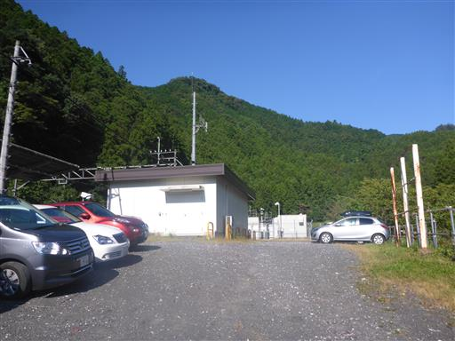
駅から下っていく階段は斜めになっていて何か歩きにくい。
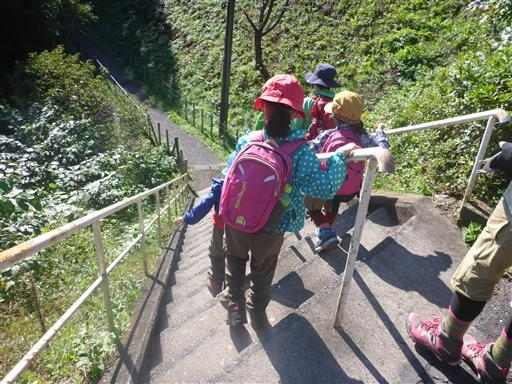
しばらくは車道歩き。車で移動するようになってから、車道歩きはずいぶんご無沙汰だ。
手をつないで歩いていく。
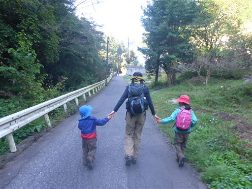
道端にコスモスの花が咲いている。
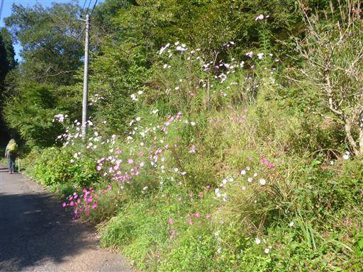
息子が「ミミズだー！」と叫んだので見てみると、そこにいたのは大きなヒル。
ヤツワクガビルという名で、血は吸わずミミズを食べて生活している。
道路だと車か人に踏まれてしまうので、枝で道端の草むらに移してあげる。
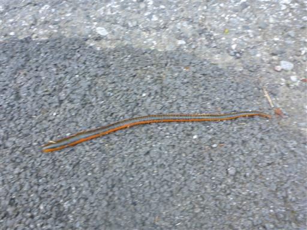
こちらはカニの死骸。
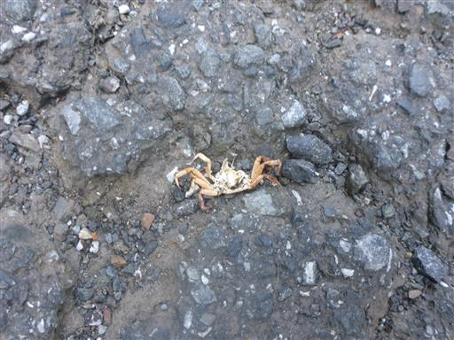
道の側に川があるので、車道でも様々な生物が見つかる。
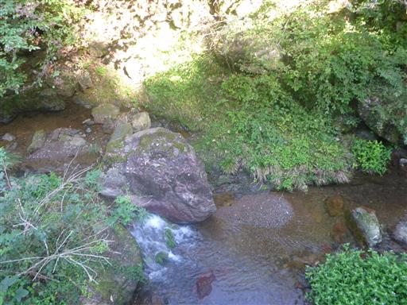
御休処があって、ふかしたての饅頭を試食させてもらったら
息子が大いに気に入ったため、山で食べるようの饅頭を2つ購入する。
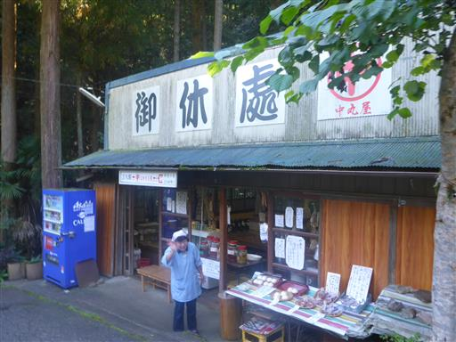
頭上には複雑なクモの巣。辺りはクモの巣と大きなクモがやたら多い。

歩くこと45分でようやく登山口に到着。
20分の距離なので少し時間がかかり過ぎだ。
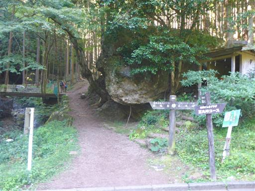
最初は沢沿いの暗い道から始まる。
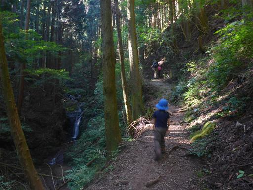
滑りやすい急な斜面を登りきると尾根道に出る。
ここで小休止して購入した饅頭を食べる。まだ温かくて非常においしかった。
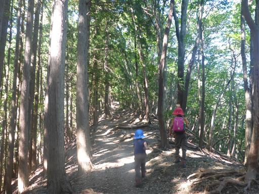
尾根道をしばらく登ると小さな岩場に出てくる。
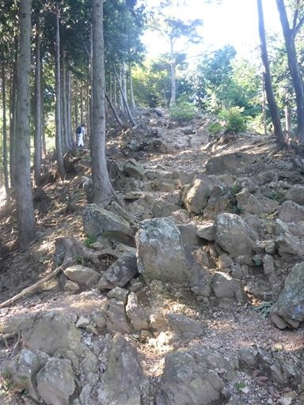
ここからは少し展望が広がる。
今日は絶好の快晴なのだが、大した山が見えないのが残念だ。

五輪山の山頂に到着。小さなピークで登山道の分岐点になっている。
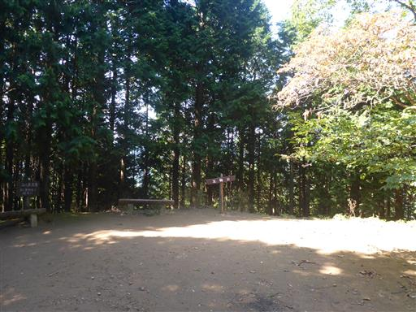
五輪山からの下りはちょっと滑りやすそうな斜面。
息子に「カニさん歩きで下るんだよ」と教えてあげると、手もカニさんになっている。
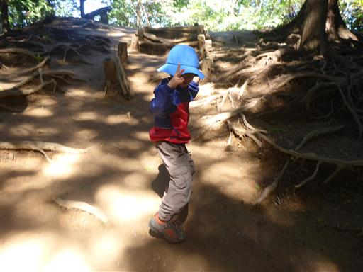
いよいよ山頂直下の鎖場に到着。
落石が危険なため迂回路の女坂を勧める標識がある。
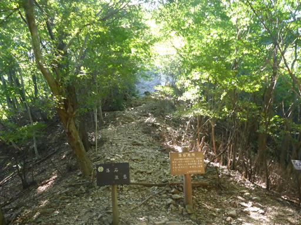
鎖場の直下までやって来る。
幼児連れで鎖場を登るのは憚られるが、娘だけという訳にもいかないので
息子にも挑戦させてみる。
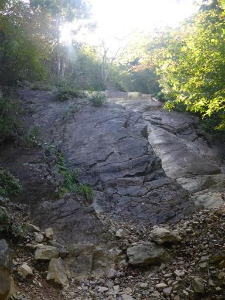
案外息子はスイスイと登って行く。
登りやすいルートさえ教えてあげれば、問題なく登れそうだ。
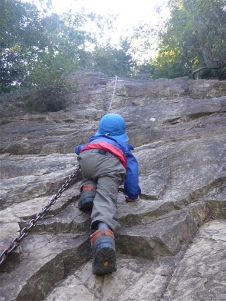
娘も後ろから登ってくる。こちらのサポートは妻に任せる。
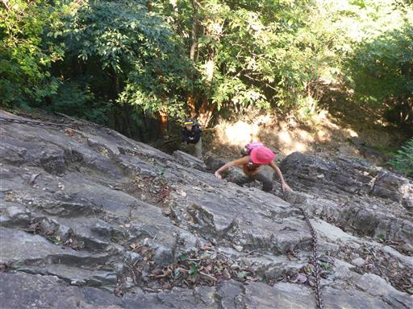
鎖場のゴールが見えてきた。あともう少しだ。
息子のサポートをしながら鎖場を登り、
ついでに写真撮影も行うとなると結構忙しい。
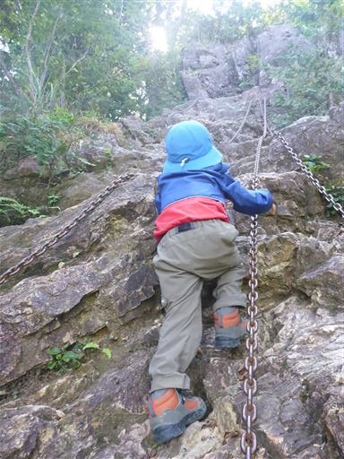
鎖場を上から見下ろす。
傾斜の緩い鎖場なので一番下までは見えないが、結構長い鎖場だ。

鎖場を登りきると、今度は木の根だらけの急登になる。
ものすごい数の根だ。
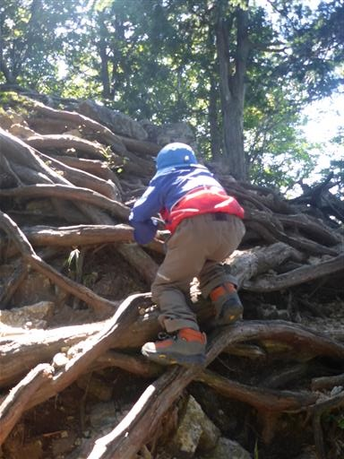
最後に小さな岩場を超えると危険地帯は終了だ。
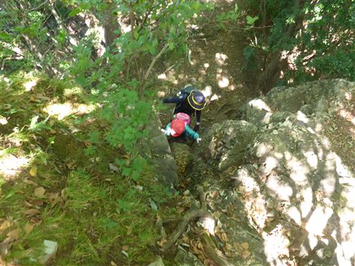
ここからは大展望が広がる。
ゆっくり景色を見たかったが、息子が先に進んでいくため後を追いかける。
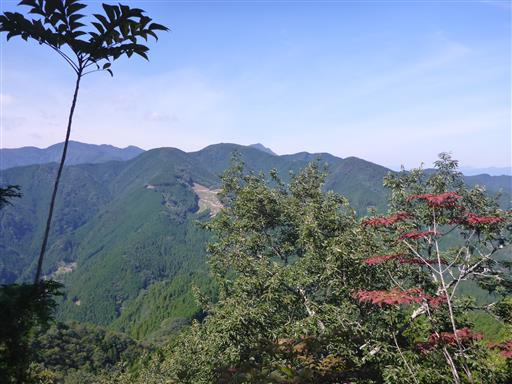
岩場から少し歩くと伊豆ヶ岳の山頂に到着する。標高851m。

細長い山頂では大グループの登山者が休憩している。
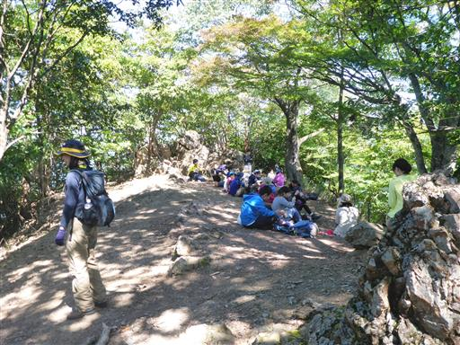
昼食をとったら体が冷えてきたので、日向に移動して日向ぼっこ。
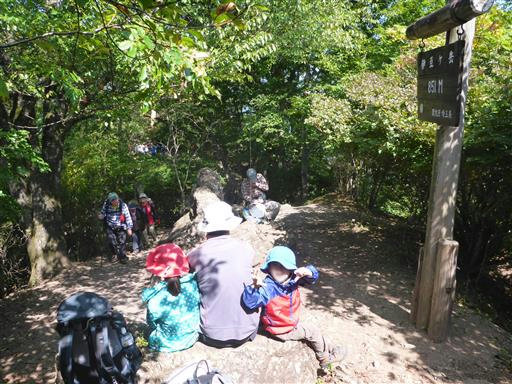
下山は女坂を下る。こちらは普通の登山道だ。
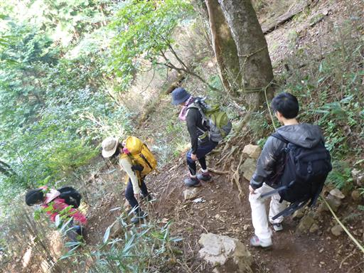
下山は少し足を延ばして正丸峠を経由することにする。
周りは植林地帯で木が密集して並んでいる。
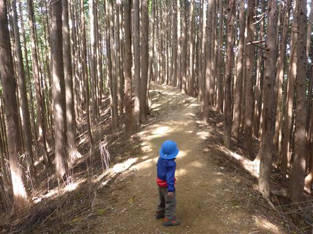
地面にハチの巣が落ちている。幸いハチはもういない。
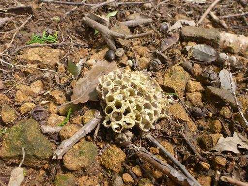
正丸峠に到着。大きな茶屋が建っている。
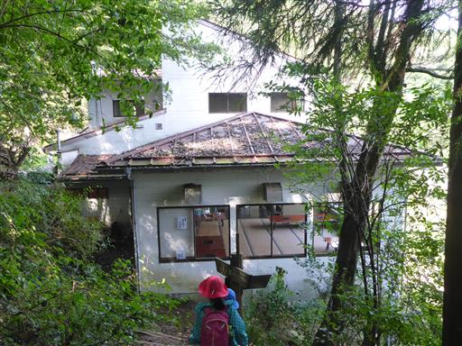
奥村茶屋の表に出てくる。
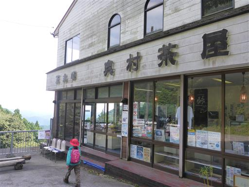
側には小さな展望台があり、東側の展望が広がる。
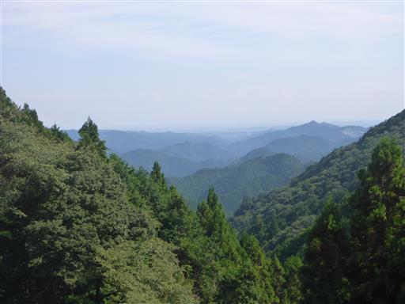
さらなる大展望を求めて、近くの登山道をしばらく登ってみたが、
東屋があるだけで展望は全く広がらなかったので、引き返すことにする。
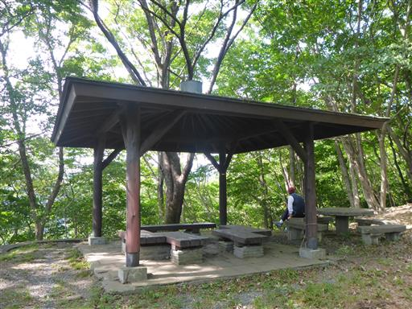
正丸峠で一服したら下山を続ける。
ものすごい急斜面で手すりがないと危険なくらいだ。
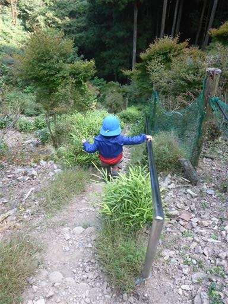
登山道は荒れ気味で水が流れている。
息子が極度に嫌がって避けているため、登山靴は防水で長靴と一緒だと教えてあげると、
次の水たまりに勢いよく飛び込んでいた…。教え方を間違えたようだ。
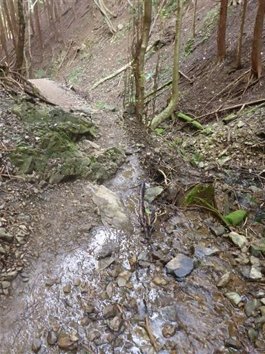
慎重に木橋を渡る。息子は怖いらしく手をつないで通過する。
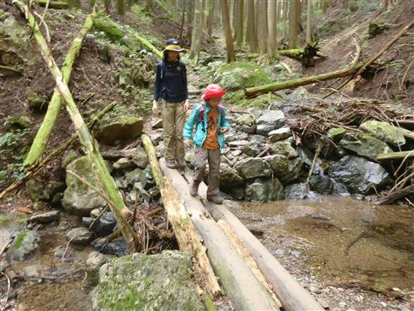
車道が見えてきた。山道はここまでだ。
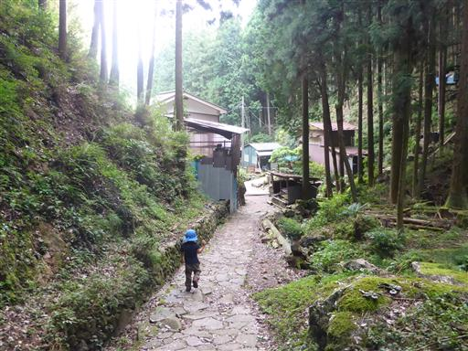
道路の側に売地がある。この辺りの土地はいくらくらいで取引されているのだろう？
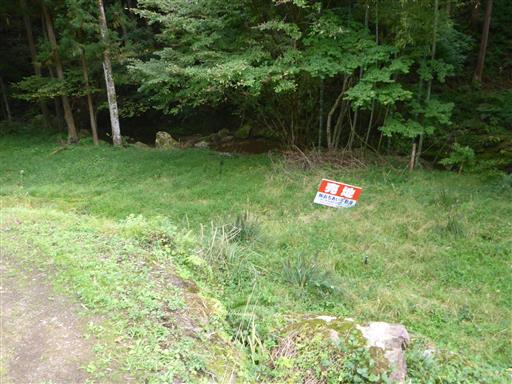
帰りにも御休処に立ち寄り、よもぎ餅を購入。
中でお茶を出していただく。ここではずいぶんと親切にしていただいた。
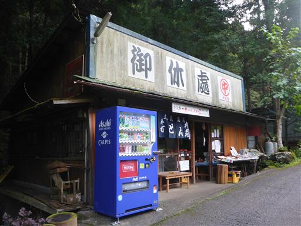
最後の車道を歩き切り、正丸駅に到着する。
絶好の快晴に、あまり展望の開けない山ではあったが
岩場を登ったりおいしいものを食べたりと、楽しい登山だった。
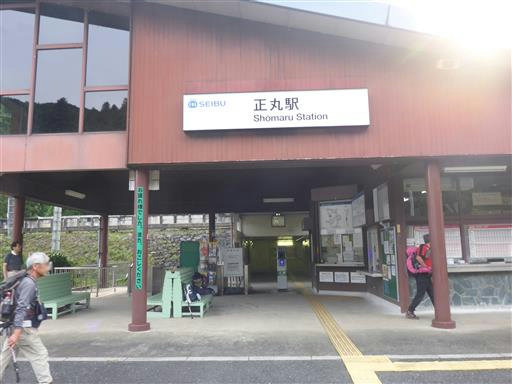